Core Solutions Project Disclaimer
This is the hosting site for a project in partnership with Core Solutions Consulting. For display purposes only, depictions and statements made here are in the midst of finalization, and further research is required; should not be taken literally. Some of the projects depicted were selected on the basis of their impact capability, project and parent association's transparency, as well as how recent the project was completed or if it is still on going.
Here are the top innovative and commercially viable nuclear waste management related projects
Sources include: the 2017 nuclear news buyers guide, American Nuclear Society 2017 National Conference, argonne national lab, oak ridge national lab, lawrence berkeley national lab, and other sources.
Lumos - Top Picks
-

Holtec - Ballistic Missile Tests
A used fuel transport cask developed by Holtec International recently passed a test showing it could survive an aircraft crash with no breach of its containment integrity. Conducted at the U.S. Army's Aberdeen Proving Grounds in Maryland, the Aug. 29 test was designed to simulate the impact of an aircraft crash on the HI-STAR 180 transport cask when used to store used nuclear fuel. Test observers included Holtec client Axpo Power AG, the Swiss Federal Nuclear Safety Inspectorate and the Swiss Association for Technical Inspections. The test was required in order to obtain a certificate for the use of the cask for storage by Axpo Power, an electricity generation and transmission company.
Founder & CEO of Lumos -
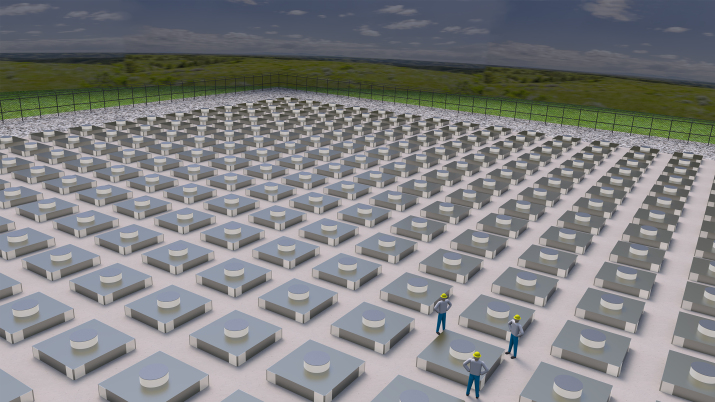 Holtec - Interim Storage Facility
We are pleased to announce the adoption of a Memorandum of Agreement by Holtec International and the Eddy Lea Energy Alliance (ELEA), LLC to establish an underground consolidated interim storage facility in southeastern New Mexico, approximately 12 miles from the Waste Isolation Pilot Plant (WIPP) facility (see map below). ELEA, a limited liability company owned by the cities of Carlsbad and Hobbs, and Eddy County and Lea County, has successfully secured the support of the state of New Mexico to build a state-of-the-art interim storage facility on their industrial land. -
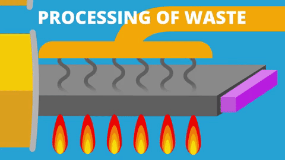 University of Bristol, Cabot Institute - Diamond Nuclear Batteries
The diamond battery being researched is aiming to use radioactive waste as a source of energy, the team of chemists and physicists behind the project have grown a man-made diamond that when exposed to radiation generates a small electrical current. Using these diamonds to encapsulate spent nuclear fuel would make diamond batteries capable of delivering a constant current for thousands of years that have no moving parts and require no maintenance. These discoveries were made at the Cabot Institute at University of Bristol. This breakthrough could mean finding a use for the tons of spent fuel that we are currently struggling to deal with and paying to keep cool. One of the proposed batteries uses carbon 14, a radioisotope of carbon that contaminates graphite moderators, meaning it then has to be stored, but by removing the carbon 14 concentrated on the surface of the graphite, the moderator becomes less radioactive and the carbon 14 can be used to create the batteries. At this stage, prototypes have been developed, but there is limited information about what still needs to be done, but the idea is that these batteries would be the most applicable in outer space or implants, as they have the advantage of never needing to be recharged for the foreseeable future. The breakthrough was first announced on November 25th, 2016, so it is still early in the overall development of the technology. -
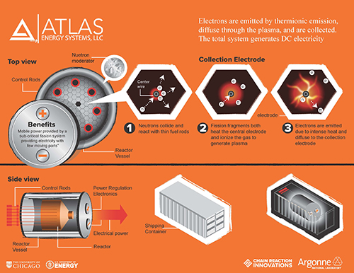 Atlas Energy Systems - Novel Radioisotope battery made from nuclear waste
The goal of this project is to utilize the energy available in high-level radioactive decay products from SNF through radioisotope plasma generation. This technology is being developed by Atlas Energy Systems, LLC with support from Chain Reactions Innovations, a program for innovators by Argonne National Lab. The Atlas Energy System would serve two functions, the management of spent nuclear fuel and providing emission-free power, it might also be a possible replacement for lithium-ion batteries and gasoline, which would be greatly beneficial to the environment. As of now the principles behind the device have been proven and the research effort at the moment is investigating non-equilibrium plasma chemistry so as to improve efficiency and power density. The company was founded in 2014 and currently has two patents pending, but no specific timeline for the future. -

the Central Interim Storage Facility for Spent Nuclear Fuel - SKB
Clab – the Central Interim Storage Facility for Spent Nuclear Fuel is located at Simpevarp about 25 kilometres north of Oskarshamn. This is where all the spent nuclear fuel from Swedish nuclear power plants is kept while waiting for the final repository to begin operating. -

Radvision 3D - Fukushima, Unit 3 - Transco Products
RadVision3D is the only complete radiation detection and planning service that takes you from detection to mitigation, letting you take control of your work planning and empowering safer plant conditions. RadVision3D® is the only radiation detection and planning service that gives you the ability to virtually overlay and simulate a variety of shielding solutions and determine their effects on plant conditions. Using the tablet-accessible 3D analysis of your plant’s radiological conditions, you can virtually simulate radiation shielding options and their effects. A full three-dimensional model of the scanned area that includes merged optical, point cloud and gamma radiation data. Customizable dose planes to interrogate dose levels at various levels in the model. This analysis ensures that: • Work planning is improved and optimized • Accurate protective measures and mitigation strategies are developed for workers and equipment • Dose rates are significantly reduced -
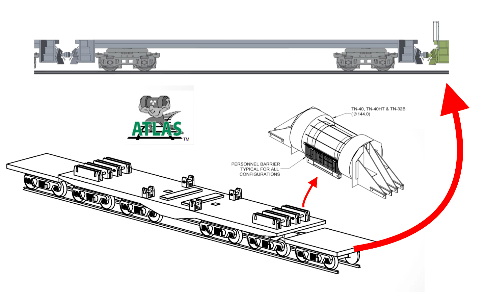 Atlas Railcar
Specialized railcars for the safe rail transport SNF are being designed and prototyped, a DOE-NE effort aided by researchers from ORNL, PNNL, and TechSource, Inc. The transportation of SNF and high-level waste from commercial nuclear reactors to a storage facility is an crucial component of a full waste management system. Due to the nature of the material being transported, it is imperative to ensure that the waste can reliably be delivered with minimal risk of incident. As the clock is running down for the US to develop a system to manage its radioactive waste, there will soon be a need for the large-scale transport system, a need the DOE hopes to satisfy with the Atlas Railcar. As of March 2017, the project was on schedule, working on Phase 2, preliminary design, which includes design analysis, modeling, and simulation of the Atlas and buffer railcars. The project is set to begin Phase 3, prototype fabrication in mid-July, awaiting a “Notice to Proceed with the Test Phase” from the Association of American Railroads (AAR). The contract to begin this project was signed in August 2015, going forward the goal is to have a fully developed prototype by March 2019, test the railcars and by July of 2022 receive conditional approval from AAR, signifying the completion of the project. -
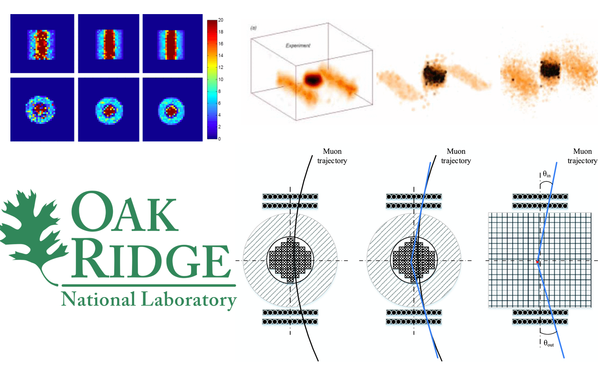 Characterization of Waste. Muon Momentum for Detection of Nuclear Material Within Shielded Spent Nuclear Fuel Dry Casks
The focus of this research project is to study the potential use of muon tomography to inspect commercial storage dry casks of spent nuclear fuel. This topic is important to waste management because at the moment there is no affordable way to monitor and image spent fuel dry casks. The issue at hand is that once the spent fuel canisters are sealed, the contents are not visible conventional methods of inspection like X-rays are very limited due to how well shielded the canisters. Muons not only have great penetrating power capable of canister imaging, but are also naturally generated, making this remotely available and inexpensive. The researchers have tested the viability of this imaging method and have yielded promising results which can give us a rough image of the contents, showing the presence or absence of fuel assemblies. Going forward the team hopes to incorporate muon momentum measurements, which could potentially improve resolution and identify partial defects, fuel assemblies, and individual fuel rods. The research is being conducted by ORNL and Purdue University using funding from the Nuclear Energy University Programs (DOE), managed by UT-Battelle,LLC, for the DOE. The results demonstrate that multiple Coulomb scattering can be used to successfully reconstruct the dry cask contents and allow identification of all scenarios with the exception of one fuel assembly missing. -
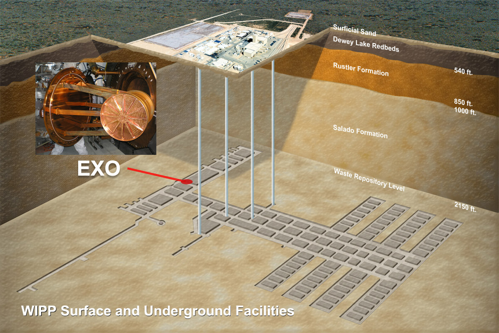 Waste Isolation Pilot Plant
The nation's only deep geologic repository for nuclear waste. he U.S. Department of Energy’s (DOE) Waste Isolation Pilot Plant (WIPP) is a deep geologic repository for permanent disposal of a specific type of waste that is the byproduct of the nation's nuclear defense program. CH and RH WasteWIPP is the nation's only repository for the disposal of nuclear waste known as transuranic, or TRU, waste. It consists of clothing, tools, rags, residues, debris, soil and other items contaminated with small amounts of plutonium and other man-made radioactive elements. Disposal of transuranic waste is critical to the cleanup of Cold War nuclear production sites. Waste from DOE sites around the country is sent to WIPP for permanent disposal. TRU waste is categorized as "contact-handled" or "remote-handled" based on the amount of radiation dose measured at the surface of the waste container. Contact-handled waste has a radiation dose rate not greater than 200 millirem (mrem) per hour, while remote-handled waste can have a dose rate up to 1,000 rem per hour. About 96 percent of the waste to be disposed at WIPP is contact-handled. WIPP has been disposing of legacy TRU waste since 1999, cleaning up 22 generator sites nationwide. For more information on the WIPP repository -
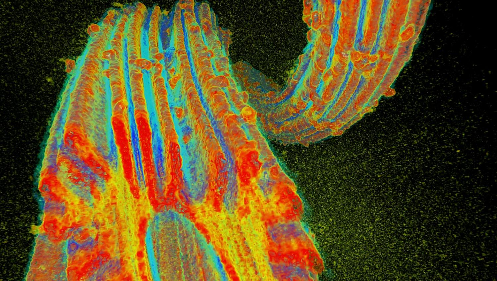 Uranium Seawater Extraction
In 2011 the DoE created a program to tackle the challenge of economically extracting uranium from seawater. A collaboration between national laboratories, universities, and research institutions has since developed new adsorbents capable of extracting uranium for seawater for roughly 30% of the cost of the previous leading adsorbents. As of April 2016 tests at PNNL demonstrated that one adsorbent created at ORNL has exceeded 6 grams of uranium per kg of adsorbent after 56 days. It is estimated that uranium from terrestrial sources will last for about another 100 years, so a system that can economically extract uranium from seawater will be critical for the future of nuclear energy. -
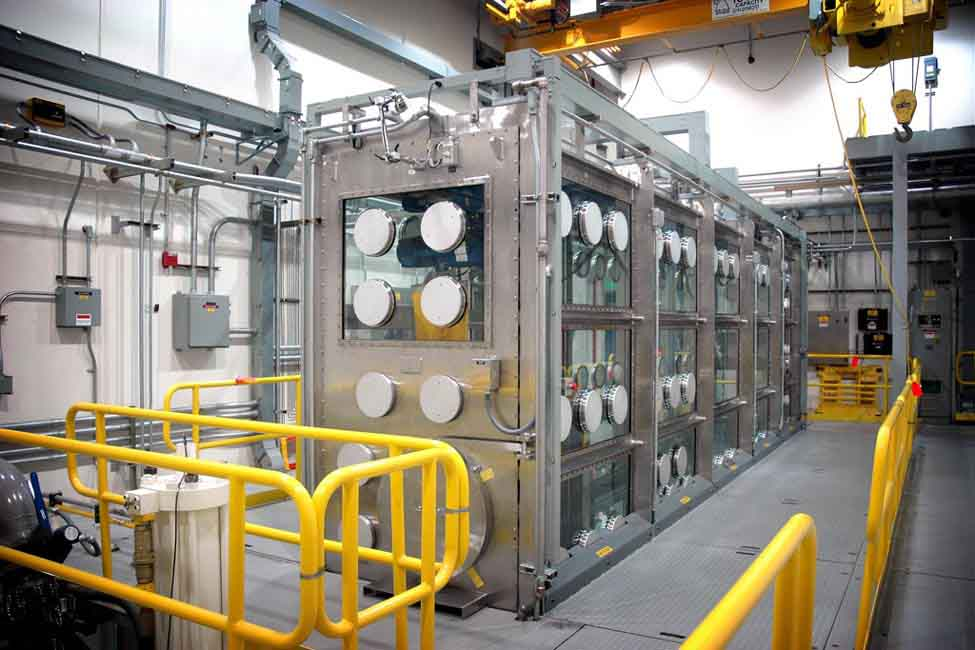 Advanced Mixed Waste Treatment Project - Bechtel
Bechtel and partner BWX Technologies managed and operated the Advanced Mixed Waste Treatment Project (AMWTP)—the Department of Energy’s (DOE's) most advanced radioactive waste treatment facility—in Idaho Falls, Idaho, from 2005 to 2011. The Advanced Mixed Waste Treatment project retrieved, identified, treated, packaged, and shipped transuranic waste for permanent storage. Radioactive waste was sent to the Idaho site during the 1970s and 1980s from DOE’s Rocky Flats nuclear weapons plant near Denver, Colorado. In 2010, the project team reduced waste volume by nearly 2,700 cubic yards (more than 2,050 cubic meters)—nearly 9,900 55-gallon (264 cubic meters) drums—eliminating 360 shipments and saving more than 200,000 gallons (757,082 liters) of fuel.As a result, the Advanced Mixed Waste Treatment Project won a 2011 EStar Environmental Sustainability award from the U.S. Department of Energy—one of three it won that year. -
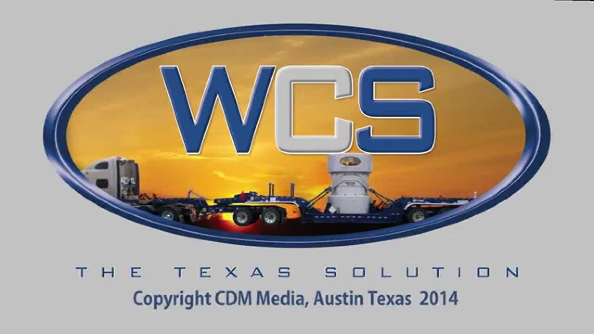 Waste Control Specialists + AREVA
This was intentionally left blank. -
The Barnwell Disposal Facility - Energy Solutions
The Barnwell Disposal Facility is owned by the state of South Carolina and operated by EnergySolutions. The facility is the host disposal site for the Atlantic Compact which is comprised of South Carolina, New Jersey, and Connecticut. The Facility began operations in 1971 and has provided continuous disposal operations for over 45 years. The site is licensed to dispose of Class A, B and C low-level wastes, including irradiated hardware and large components, steam generators, resins, and reactor pressure vessels. -
Clive Disposal Facility - Energy Solutions
The Clive disposal facility is located in the West Desert of Utah approximately 75 miles west of Salt Lake City. With nearly 30 years of operational experience, the Clive disposal facility plays a vital role in the nuclear industry as a safe and compliant option for permanent disposal of radioactive waste. -
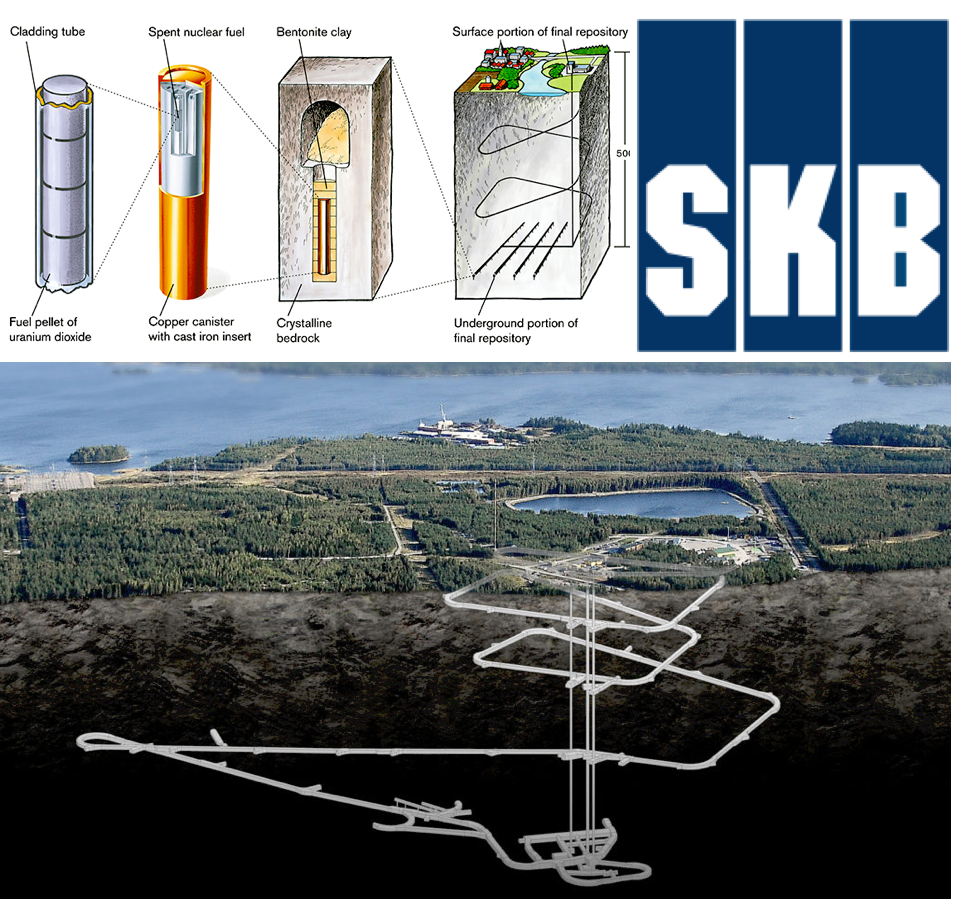 Spent Nuclear Fuel Geological Repository - SKB
SKB uses a special method for final disposal of the spent nuclear fuel. It is called KBS-3 and is based on three protective barriers: copper canisters, Bentonite clay and the Swedish bedrock. SKB is therefore planning to construct a Spent Fuel Repository at Forsmark in Östhammars Municipality. The method that has been developed involves first encapsulating the nuclear fuel in copper canisters. The sealed copper canisters will then be placed in a system of tunnels about 500 metres deep in the solid bedrock. Here they will be embedded in Bentonite clay. -
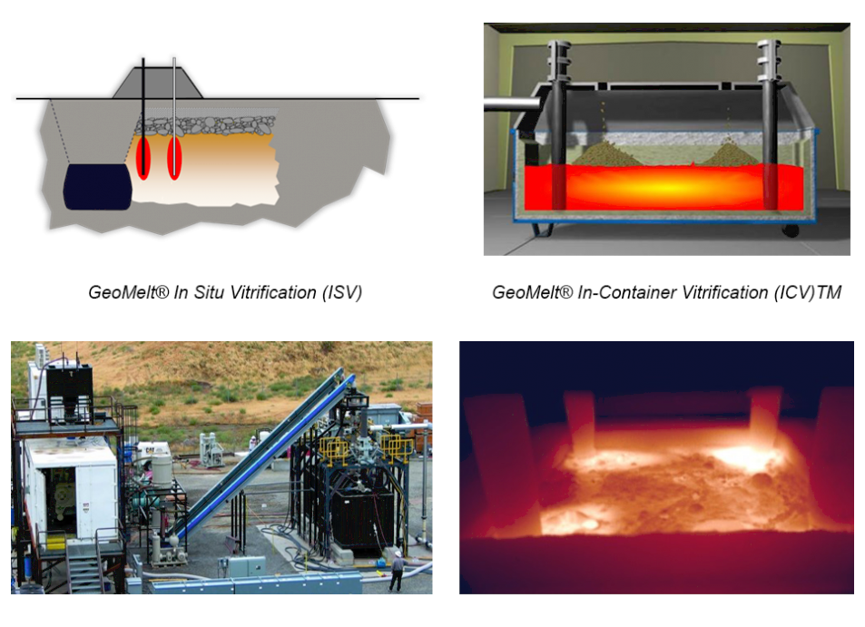 Vitrification with geomelt - Kurion Veolia
Veolia Nuclear Solutions’ GeoMelt® technologies are a group of vitrification processes that are configured in a variety of ways to meet a wide range of radioactive and hazardous waste treatment and remediation needs. GeoMelt® vitrification destroys organic wastes and immobilizes radionuclides and heavy metals in an ultra-stable glass. Initially developed by Pacific Northwest National Laboratory in the U.S., GeoMelt® has been used successfully around the world for the U.S. Department of Energy (DOE) in Hanford and at Sellafield in the UK for example. -
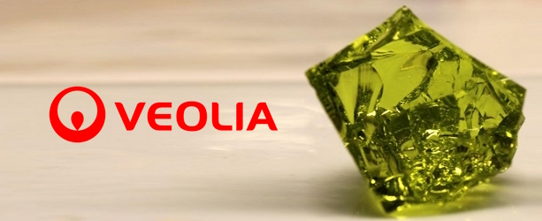 Modular Vitrification System - Kurion Veolia
MVS® is a proprietary in-container induction process that has been developed to be a simple, low cost, and quickly deployable vitrification option to convert radioactive wastes into glass. With the inherent flexibility and wide operating temperature range of the MVS®, a vitrification solution is provided which ensures the safest and most secure long term isotope immobilization. -
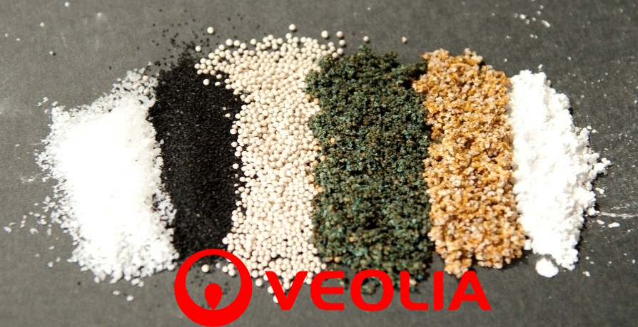 inorganic Media to Separate Radioisotopes from Water Streams - Kurion Veolia
Based on ion exchange – a natural phenomenon that has been harnessed by scientists and engineers for over 150 years – Veolia Nuclear Solutions’ Ion Specific Media builds upon technologies and is proven to be effective for environmental remediation. xOur inorganic Ion Specific Media (ISM®) captures specific ions from contaminated water efficiently and economically. Ion exchange plays a crucial role in protecting the environment from nuclear waste, particularly ions found in contaminated water. -
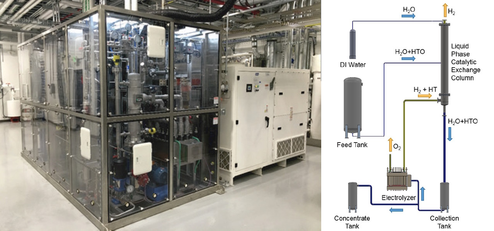 Modular Detritiation System (MDS®) System - Kurion Veolia
The Modular Detritiation System is based on proven technology that has been used commercially for over 30 years, providing nuclear operators an economical path to strengthen public trust and improve energy production with a new – and proven way – to remove Tritium. The MDS® is a Tritium management tool for processing large volumes of light water across a range of concentrations. This technology is based on the working principle of combined electrolysis catalytic exchange (CECE) and releases only clean oxygen and hydrogen with no liquid effluent. The technology builds on proven heavy water solutions, and although developed with a focus on light water, it can also be adapted for use in heavy water detritiation. -
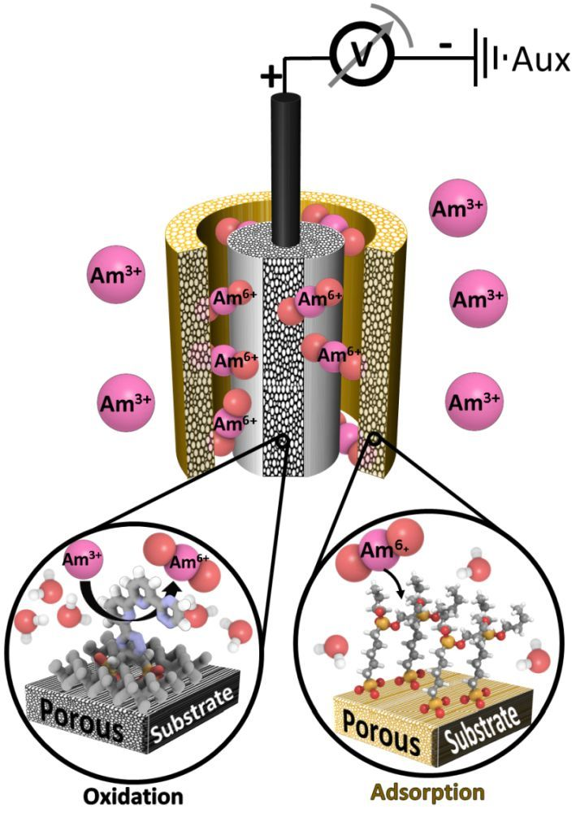 Electrochemical oxidation of 243Am(III) in nitric acid by a terpyridyl-derivatized electrode - INL
You've probably heard of uranium and plutonium. Americium (Am) is less widely discussed outside chemistry circles, but the separation of this heavier radioactive element from nuclear waste streams is a major goal of fuel reprocessing research. The trouble is that trivalent Am ions are hard to tease apart from similarly charged lanthanide ions. Dares et al. now show that terpyridyl ligands appended to an electrode can promote the oxidation of trivalent Am ions to the pentavalent and hexavalent states (see the Perspective by Soderquist). These more highly charged ions should be easier to isolate for the subsequent use of the Am in next-generation nuclear reactors. -
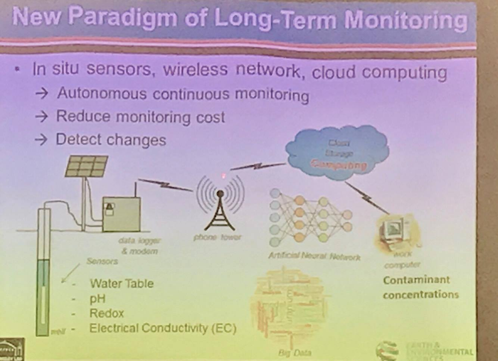 Coupling Big Data Analytics and Reactive Transport Modeling for Cost-effective Groundwater Monitoring - LBNL
By using advanced data modeling, the study aims to improve the current radiation monitoring systems. The Fukushima accident and the Savannah River Site F-Area were the subjects of real-time monitoring to demonstrate the effectiveness of the fast response systems. An improved monitoring system using data analytics can be applied to facilities like power plants and waste storage sites, to which effective monitoring is critical to long-term safety of these sites. The project has demonstrated its advantages compared to existing air dose rate and groundwater monitoring methods that are currently being used, but it is still being further developed before it is implemented for widespread use.The study is being done by researchers at the Lawrence Berkeley National Lab and the University of California at Berkeley. A more in depth paper published by Haruko Wainwright on the same topic was written as a collaboration of researchers from LBNL, SRNL, LANL, and PNNL. -
Use of non-linear ultrasonic guided waves for early damage detection
The United States’ dependence on interim dry storage of SNF presents many challenges, one of such being the need for a more advanced monitoring system. To ensure safety from exposure, a new system must be capable of detecting cracks formed in the stainless steel canister and the degradation of the concrete overpack. As per the abstract, the focus of the research is to develop a “Novel in-situ surface composition characterization, nondestructive inspection methods appropriate for the canister using linear and nonlinear ultrasonic guided waves, ultrasonic nondestructive inspection of bare and clad concrete, and development of a robotically guided wand for access to a harsh and hazardous environment within confined spaces that also provides sensor positional awareness.” According to the most recent publications on this research, they have proven the effectiveness of laser induced breakdown spectroscopy (LIBS) to detect the presence of chloride bearing salts and electromagnetic acoustic transducers (EMAT) using ultrasonic waves to detect stress corrosion cracks. The current objective is implementing these methods into a robotic inspection system that can be delivered through the exhaust vent in a dry storage cask to evaluate its condition. -
FULL-SCALE TRANSPORT ACCIDENT TESTING IN SUPPORT OF A SPENT NUCLEAR FUEL TRANSPORTATION CAMPAIGN
The safe transport of spent nuclear fuel and high-level radioactive waste is an important aspect of the waste management system of the United States. The Nuclear Regulatory Commission (NRC) currently certifies spent nuclear fuel rail cask designs based primarily on numerical modeling of hypothetical accident conditions augmented with some small scale testing. However, NRC initiated a Package Performance Study (PPS) in 2001 to examine the response of full-scale rail casks in extreme transportation accidents. The objectives of PPS were to demonstrate the safety of transportation casks and to provide high-fidelity data for validating the modeling. Although work on the PPS eventually stopped, the Blue Ribbon Commission on America’s Nuclear Future recommended in 2012 that the test plans be re-examined. This recommendation was in recognition of substantial public feedback calling for a full-scale severe accident test of a rail cask to verify evaluations by NRC, which find that risk from the transport of spent fuel in certified casks is extremely low. This report, which serves as the re-assessment, provides a summary of the history of the PPS planning, identifies the objectives and technical issues that drove the scope of the PPS, and presents a possible path for moving forward in planning to conduct a full-scale cask test. Because full-scale testing is expensive, the value of such testing on public perceptions and public acceptance is important. Consequently, the path forward starts with a public perception component followed by two additional components: accident simulation and first responder training. The proposed path forward presents a series of study options with several points where the package performance study could be redirected if warranted.

We are currently scouting talent!
If you like to work with a creative, inclusive, and lively team in a friendly enviroment then e-mail us today!
Contact Details
Email:
info@lumosindustries.com
Website:
http://www.lumosindustries.com
Lumos Industries Incorporated
614 N. Ogden Avenue, Suite 100
Chicago
Illnois, 60642